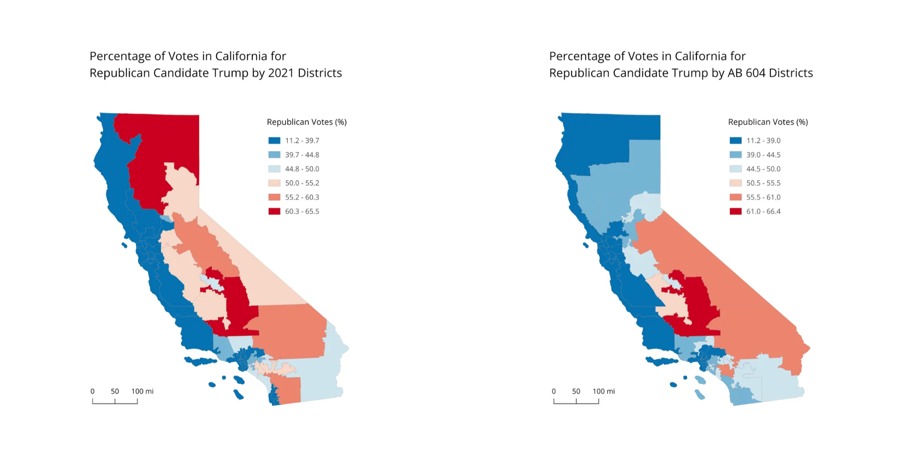
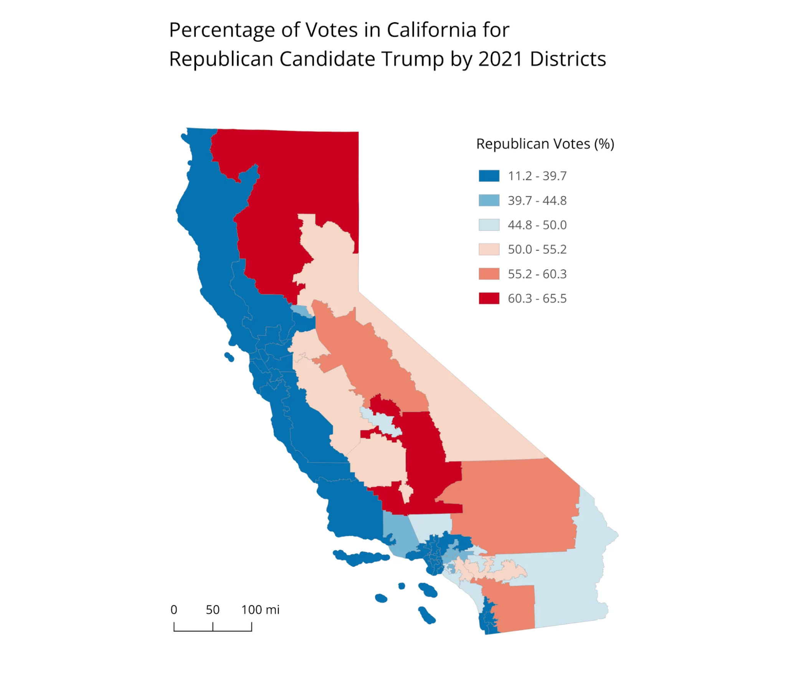
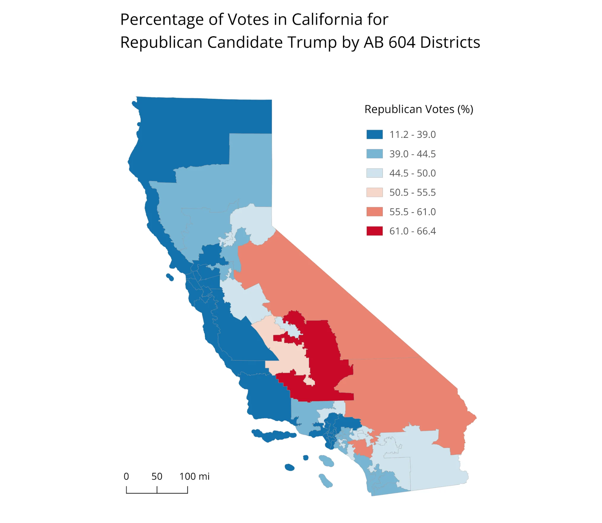
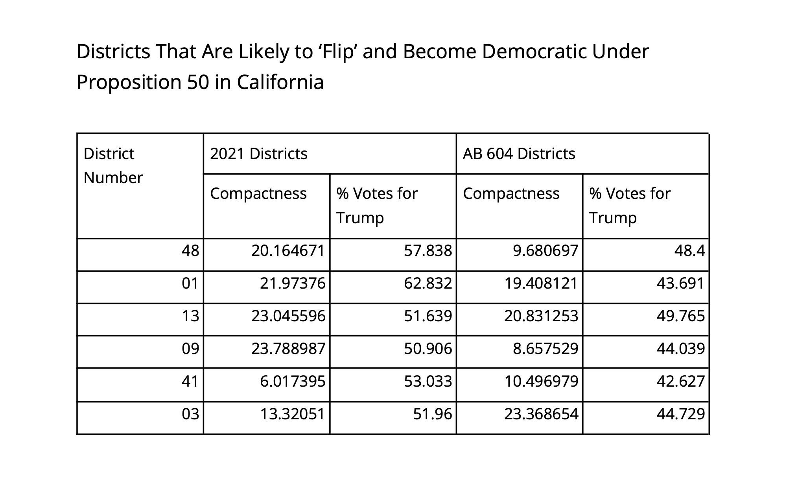

Lines of Power
The same votes can look different when you change the district boundaries.

I compared Republican vote share in California under the 2021 congressional districts and the proposed AB 604 districts. The two maps use the same kind of measure but different boundaries.
The table shows selected districts where the numbers change. This is a comparison of geographic units, not a prediction of future election results.
More maps


